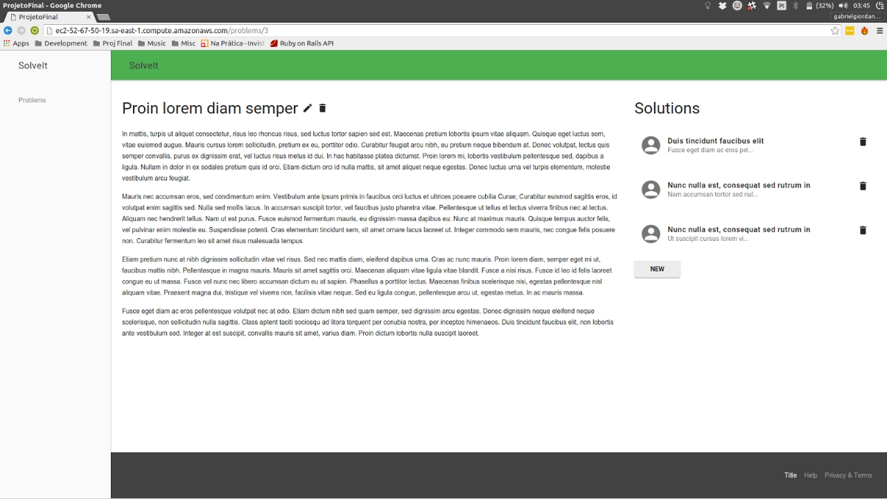

Desenvolvimento de uma plataforma de criação de soluções incrementais através de BDD
Nome: Gabriel Giordano Batista
Orientador: Mauro Nacif Rocha
Anteriormente

A long time ago in a galaxy far, far away....
Your browser does not support the video tag.
Algumas Funcionalidades Ilustradas
Autenticação
Autorização
Gerenciamento de versão arquivos
Sistema de sugestões
Gerenciamento de colaboradores e times
Gerenciamento de permissões nos projetos
Resolução de conflitos entre sugestões através de rebase
Conflitos que não podem ser resolvidos são destruidos
O que ficou faltando?
Conclusões
Obrigado!
Perguntas?